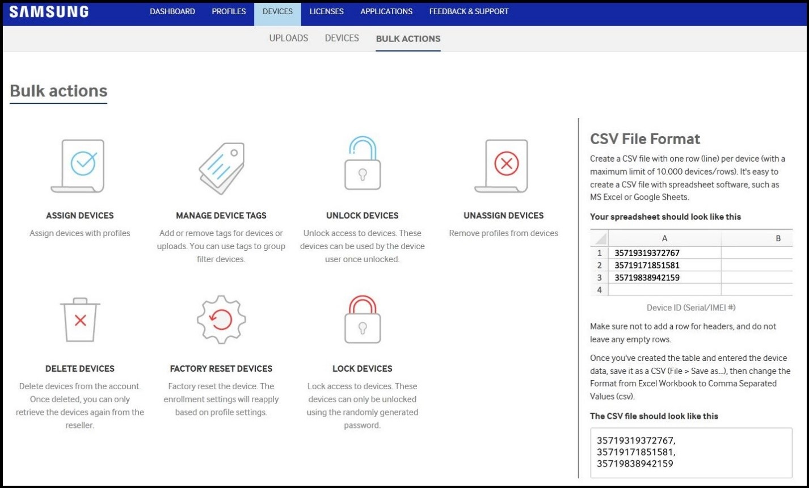

Knox Configure 1.11 release notes
Last updated July 26th, 2023
Bulk device configuration enhancements using CSV
This enhancement permits numerous bulk configuration operations within the KC console using a CSV file. Bulk configuration operations include assigning and un-assigning profiles, device deletions, locking devices, unlocking devices, and adding tags. To bulk configure devices, navigate to DEVICES and select BULK ACTIONS. Follow the directions on the right-hand side of the screen for preparing a CSV file with one device ID per row then add the CSV file into the portal.

Profile un-assignment change for locked or ProKiosk mode devices
In response to requests from both our internal and external user communities, this enhancement enables a Locked or ProKiosk mode device to remain in its current locked state or kiosk mode, even after the device profile is unassigned. To date, when a profile is unassigned from a locked or kiosk mode device, the locked state or Kiosk mode is released.
Removed model dependency from profile
The Model field has been removed from profiles. Therefore, one profile can be assigned to different models types and users do not have to create a separate profile for each model. This also enables future profile enhancements such as “auto-profile-assignment”.
Push updates available for selected devices in DEVICES tab
To date, when an IT admin pushes an updated configuration profile, all devices or selected devices assigned to that profile can receive the configuration update. With this enhancement, an IT admin can select individual devices for push updates from the portal’s DEVICES tab. This helps admins update just those specific devices intended for an update, and exclude those devices that are not.
Guaranteed push update delivery
To date, KC has not been able to guarantee the delivery of a push notification to devices. Additionally, if a device does not receive push notification message for a few weeks, for reasons such as a power-off, or no network availability, it is discarded. To remedy this issue, additional logic has been added to resend a push notification when an “Updates pushed” status has not been changed for an extended time.
Wearable Knox Configure (WKC)
Push updates available for selected wearable devices
To date, when an IT admin pushes an updated configuration profile, each wearable device utilizing this specific profile receives the configuration update, whether intended or not. With this enhancement, an IT admin can select individual wearable devices for push updates from the portal’s PROFILES tab or at the time of profile modification. This helps admins update just those specific wearable devices intended for an update, and exclude those wearable devices that are not.
Knox Mobile Enrollment (KME)
Compliance updates
The following compliance related enhancements are available in this release:
- The Privacy Policy text describing how Samsung uses personal data is now more descriptive and supplies a link to https://www2.samsungknox.com/en/privacy-policy-eu.
- The KME Terms & Conditions has been updated to remove portions of the Privacy Policy relating to the consent to use data.
Email address no longer required for support resource during enrollment
An email address is no longer required as a device user’s support contact when enrolling the device. Going forward, just a single contact phone number can be used as a contact resource.
Added Microsoft Intune MDM support
With this release, KME is supported by Microsoft’s Intune EMM solution. Users must have an Intune license to use KME on devices running Knox 2.4 or higher; no other licensing is required. To review Intune’s instructions on using KME to enroll devices, go to: https://docs.microsoft.com/en-us/intune/android-samsung-knox-mobile-enroll.
Back to release notesIs this page helpful?